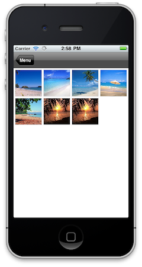
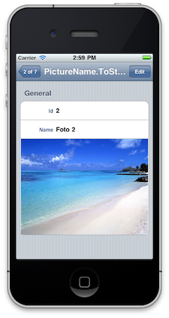

The purpose of this document is to explain how to create a user control for Smart Devices, in this particular case, a user control for iOS. What are e going to create? We will create an image gallery from a given list of images. The image gallery will display a thumbnail image of the original image and when a certain image is selected, the original image will be displayed instead of the gallery along with a message showing a description. After completing this step by step guide you will have a new user control named "ImageGallery" available in Work With for Smart Devices Pattern.   Software RequirementsTo develop user controls for iOS you'll need the following:
Basic StepsA list of steps to create the user control (with the basic functionality) is detailed below. Create the user control definition and make sure it is available in GeneXus. Project setupIn XCode, create a new Cocoa Touch Static Library project and there a new class named UCImageGalleryList. Get the KTPhotoBrowser project from GitHub, and add the files to the project. Add the GXFlexibleClient.framework located on the /Users/MacUserName/Library/Artech/GeneXus to the project. Add the following classes to the project:
Check the complete source code here. Now, you have to make some changes to the KTPhotoBrowser files, KTPhotoBrowserDataSource, add the methods: - (NSString *)titleForImageAtIndex:(NSInteger)index; - (NSString *)captionForImageAtIndex:(NSInteger)index; - (void) presentDetailViewForPhotoAtIndex:(NSUInteger) index; the KTPhotoScrollViewCntroller class, add an iVar UIBarStyle navbarPreviousStyle_ set it in viewWillAppear (see how it is done with navbarWasTranslucent_, set the navigation bar style to black translucent there, and remember to set it back to what it was in viewWillDisappear. add the method - (void) presentDetailViewForPhotoAtIndex:(NSUInteger) index; with the following implementation:
- (void) presentDetailViewForPhotoAtIndex:(NSUInteger)index {
[self showChrome];
[dataSource_ presentDetailViewForPhotoAtIndex:index];
}
Modify the KTThumbsViewController class, repeating the same with the iVar navbarPreviousStyle_ from KTPhotoScrollViewController (see above) create an iVar UINavigationController *navController; @synthesize it, and add the getter with the following code:
- (UINavigationController *) navController {
if (self->navController) {
return self->navController;
}
else {
return [self navigationController];
}
}
replace all the references to [self navigationController] with [self navController] Finally, make sure the project compiles. Add a new target to generate a library and deploy your control as a .a file. Once you have got the .a file associated to the User Control you are ready to copy it to the GeneXus User Control folder and start using it.
|
| Backlinks | |
| Creating User Controls for iOS | Category:User Controls for Smart Devices |